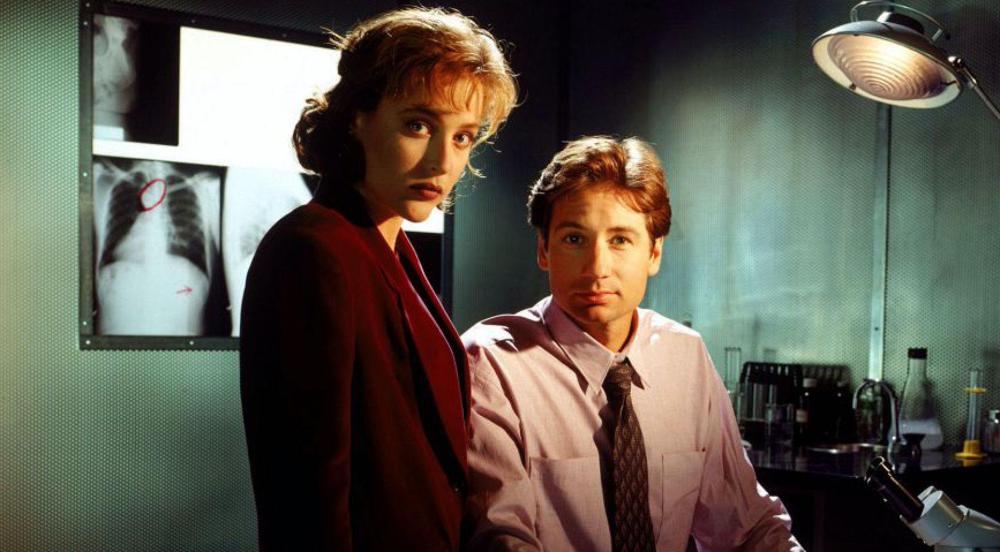

The original television series aired from September 10, 1993 to May 19, 2002 on Fox. The program spanned nine seasons, with 202 episodes.

The X-Files is an American science fiction drama television series created by Chris Carter.
Various episodes also deal with the relationship between Mulder and Scully, originally platonic, but that later develops romantically. Mulder and Scully are joined by John Doggett (Robert Patrick) and Monica Reyes (Annabeth Gish) late in the series, after Mulder is abducted.